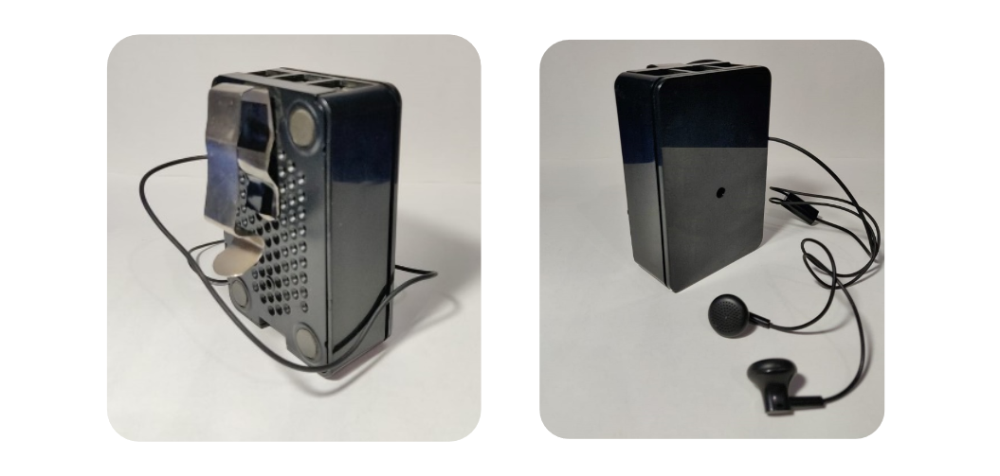

Drishti
Helping visually impaired users to walk independently
Drishti is a palm-sized portable device for visually impaired people, which
harnesses the power of artificial intelligence (AI) based obstacle recognition to
gain more independence by giving real-time auditory cues of the objects in front of the user.
-
Developers
- Karan Juneja, PICT Pune
- Sushil Patil, PICT Pune
- Udit Mendiratta, PICT Pune
-
Funded By
- Pune Institute of Computer Technology, Pune
-
Patent Application Number - 201821031503
Filed on - 22 Aug, 2018
Blindness is a disability that affects millions of people throughout the world. Performing everyday tasks such as driving, reading and walking and normal navigational tasks in the modern world can be a burdensome task for them. According to WHO, in 2017,
Globally, it is estimated that approximately 1.3 billion people live with some form of distance or near vision impairment.Furthermore, some existing tools or obstacle detection device for the visually impaired community have proven to be insufficient in alerting users to all hazards and obstacles which may threaten their safety, health or independence.
With regards to distance vision, 188.5 million have mild vision impairment, 217 million have moderate to severe vision impairment, and 36 million people are blind. With regards to near vision, 826 million people live with a near vision impairment.
Population growth and ageing will increase the risk that more people acquire vision impairment.
If visually impaired people could carry out their day-to-day activities like the people with normal vision, their chance of having a better quality of life will also improve.
To serve this noble cause and contribute to the society, project Drishti was started in 2016. After overcoming multiple challenges, the team has successfully built a working prototype.
How it works?
Drishti can recognise the objects in-front of the user and even calculate the distance between the user and the object in real-time. The output is given through earphones which describes the object along with the distance. For example –
Example 1: “There is a dog in front, within 1 meter”
Example 2: “There is a person in front, within 2 meters”
The device can also recognise “bicycles, birds, bottles, buses, cars, cats, chairs, cows, dining tables, dogs, motorbikes, people, potted plants, sofas, trains, and TV monitors”.
It can be attached on the shirt through a clip on it. It has
a camera in the front which needs an unobstructed view of the
world to take the input.
After the input is processed the output is a voice signal given through the earphones.
In this way Drishti is able to convert the visual environment
into an audible experience, helping the visually impaired people
to gain more independence to carry out their daily activities.